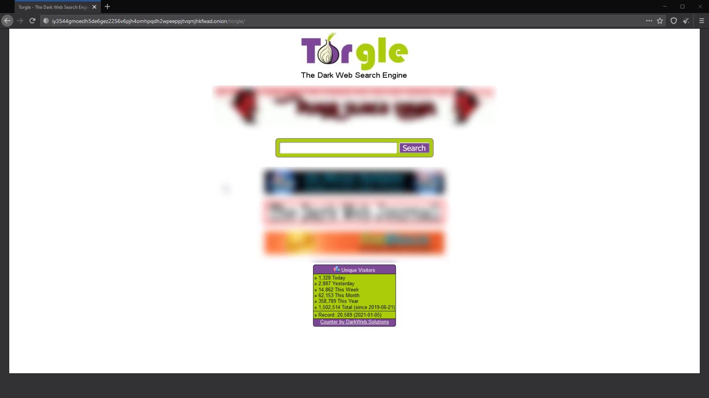
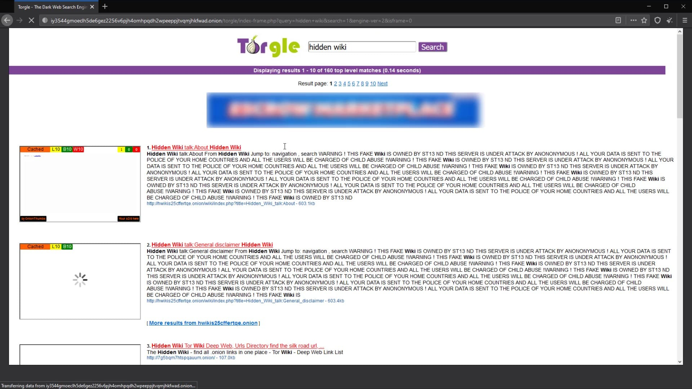
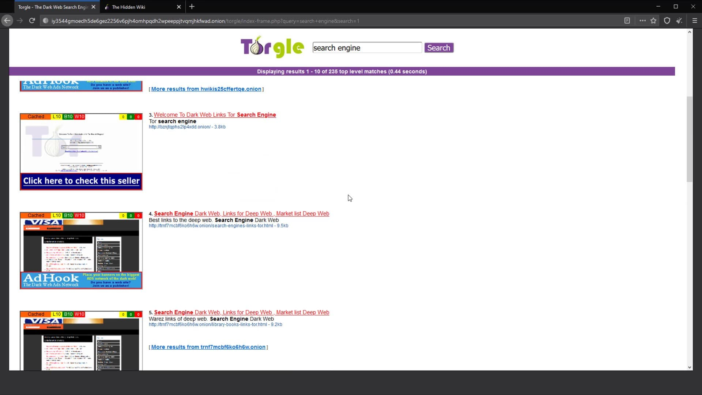

Torgle

Onion Service: http://iy3544gmoeclh5de6gez2256v6pjh4omhpqdh2wpeeppjtvqmjhkfwad.onion/Unlike the others, this search engine also displays the page content of the websites in the listing stage. In this way, we can avoid unwanted web site visits to some extent. Let's search "Hidden wiki" to try it out . Hidden wiki is a useful web address that keeps a list of onion addresses. Later we will also be talking about the hidden wiki.

The results have been listed together with the images of the websites. I go to the link I am looking for from this list, with the help of the screenshot.
You can use this engine for links and new discoveries that you are often not sure about. Nevertheless, it isn't a engine that I prefer very often, as it contains too many ads and doesn't give results with high consistency.

We have dealt with a few basic and most frequently used search engines with their general use. The websites here may be shut down over time or replaced by different search engines. But don't worry, such situations won't be a problem for us, because in this section we will see how you can access addresses on the dark web without search engines. So, when necessary, you will be able to obtain the information of new search engines through alternatives. In addition, there are many darknet search engines other than the ones I mentioned here. You can search the keyword "search engine" in the current search engine to discover alternatives. I suggest you try out many services and discover which ones useful to you. The search engines I have covered are just the engines I have chosen to give you a starting point. Always be open to discoveration for more. and please search constantly.